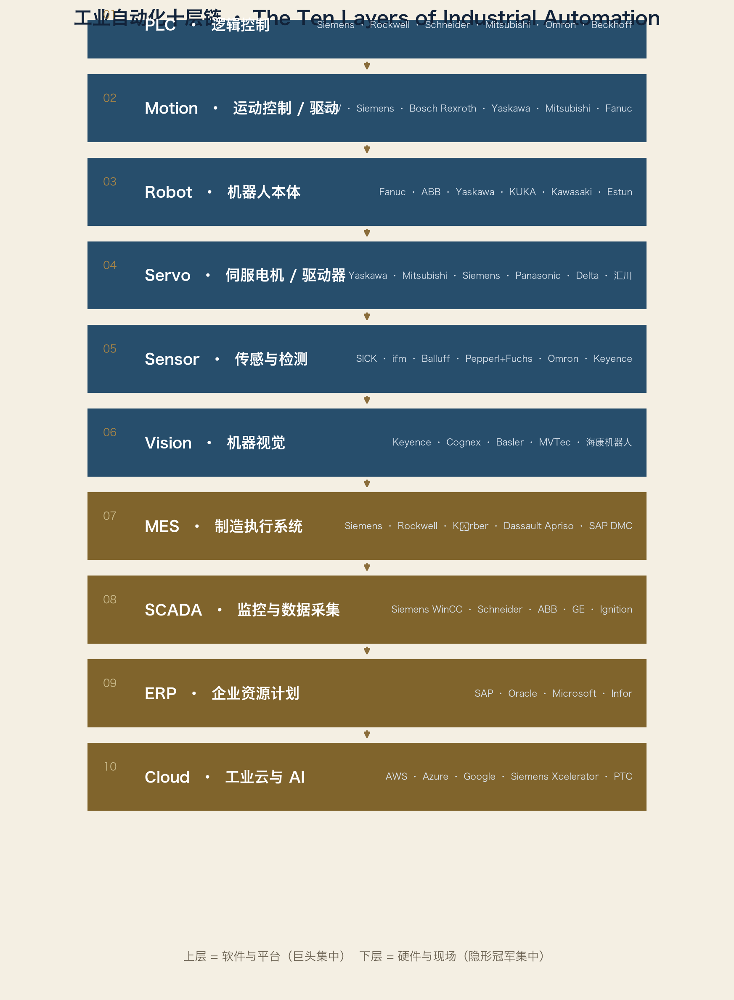
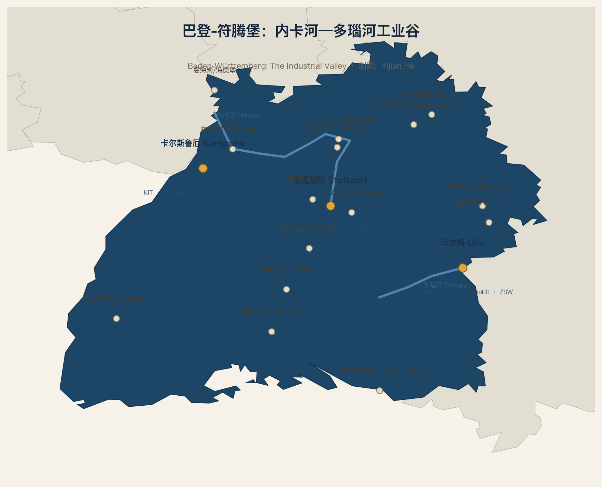
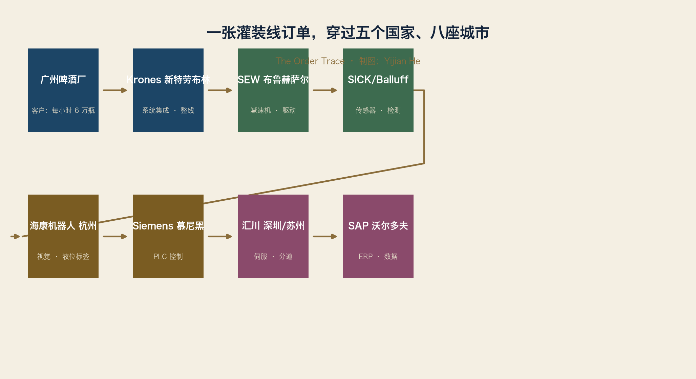

本章是全书的方法论样板：把一个产业从“世界地图”一直画到“一家企业”。 读完本章，你就知道后面所有章节（半导体、机器人、光学……）会怎么写。
3.1 为什么先画工业自动化
工业自动化是所有工业的“后台系统”：汽车厂用它焊接，啤酒厂用它灌装，芯片厂用它搬运晶圆。
它有三个特点，使它成为最好的第一个深潜对象：
1. 链条长：从一颗传感器到一套 ERP，横跨硬件、软件、网络。
2. 分布广：几乎每个工业国家都有自己的自动化产业。
3. 案例完整：全球最大的自动化公司、最典型的隐形冠军、最著名的产业集群，都在这条链上。
画完工业自动化，地图的画法就学会了。
3.2 世界地图：谁在哪里，为什么
3.2.1 德国：从“机器”到“自动化的机器”
德国是工业自动化的第一世界。
原因不是“德国人严谨”这种口号，而是四条可验证的线索：
1. 机械传统：钟表、纺织机、印刷机、机床 → 精密制造的基础
2. 汽车客户：奔驰、宝马、大众需要自动化，需求就在家门口
3. 双元制：学校+工厂的学徒体系，源源不断供应“会动手的工程师”
4. 研究机构：Fraunhofer 把大学成果直接送进工厂
德国自动化的城市带：
| 城市带 | 代表企业 | 角色 |
|---|---|---|
| 斯图加特–卡尔斯鲁厄 | SEW、Festo、Balluff、Trumpf、SICK 外围 | 驱动、气动、传感、激光 |
| 慕尼黑–纽伦堡–埃尔朗根 | Siemens、Bosch Rexroth、Infineon | PLC、驱动、芯片、工业软件 |
| 曼海姆–埃森 | Pepperl+Fuchs、Turck | 传感与防爆 |
| 腓特烈港–泰特南 | ifm electronic、ZF | 传感与传动 |
| 奥格斯堡 | KUKA | 机器人 |
3.2.2 日本：精密运动的教科书
日本自动化的根在“精密机械+电子”的交汇处：
| 城市带 | 代表企业 | 角色 |
|---|---|---|
| 名古屋（中部） | Mitsubishi、Okuma、Mazak、Toyota 系 | PLC/机床/汽车自动化 |
| 京都–大阪（关西） | Omron、Keyence、Murata、Nidec | 传感、视觉、控制、电机 |
| 北九州（九州） | Yaskawa | 伺服与机器人 |
| 山梨（忍野村） | Fanuc | 数控、伺服、机器人 |
| 长野 | Harmonic Drive 系 | 精密减速器 |
日本的关键词是“小型化与精度”：从手表、相机到伺服电机，日本把“小而精”做成了产业能力。
3.2.3 美国：软件与集成
美国自动化地图和德国完全不同：
| 城市带 | 代表企业 | 角色 |
|---|---|---|
| 密尔沃基（威斯康星） | Rockwell Automation | 北美 PLC/控制标准 |
| 波士顿 | Cognex、Teradyne、Analog Devices | 机器视觉与测试 |
| 奥斯汀/达拉斯 | NI（艾默生）、TI | 测试测量与芯片 |
| 硅谷 | 工业互联网软件生态 | 软件与 AI |
美国强在“定义标准和软件”，弱在“精密机械制造”。所以美国自动化公司经常卖软件和解决方案，硬件在德国和日本造。
3.2.4 中国：最大的市场，最快的追赶
| 城市带 | 代表企业 | 角色 |
|---|---|---|
| 深圳–东莞 | 汇川、海康机器人、大族 | 伺服、视觉、激光 |
| 上海–苏州 | 西门子/博世/SEW 中国总部与工厂、节卡、新时达 | 外资本地化+本土品牌 |
| 北京 | 和利时、中国系统集成商 | DCS/SCADA |
| 南京 | 埃斯顿 | 机器人 |
| 杭州 | 海康、大华 | 机器视觉 |
中国是 2024 年全球最大工业机器人市场（安装 29.5 万台，占 54%），本土品牌在中国的市场份额首次超过外资（57%）。但高端 PLC、精密伺服、工业软件仍是短板。
3.2.5 其他重要节点
| 国家 | 城市 | 代表企业 | 角色 |
|---|---|---|---|
| 瑞士 | 苏黎世/巴登 | ABB | 机器人+电气化 |
| 法国 | 巴黎/格勒诺布尔 | Schneider Electric | PLC/SCADA 全球巨头 |
| 意大利 | 都灵/博洛尼亚 | Comau、IMA | 汽车与包装自动化 |
| 丹麦 | 欧登塞 | Universal Robots | 协作机器人 |
| 韩国 | 首尔/大田 | LG、Hyundai 系 | 显示与汽车自动化 |
3.3 产业链地图：从 PLC 到 Cloud
工业自动化不是一种产品，而是一条十层链。每一层都有人占据，每一层都有世界冠军：

PLC → 逻辑控制 → Siemens、Rockwell、Schneider、Mitsubishi、Omron、Beckhoff
Motion → 运动控制/驱动 → SEW、Siemens、Bosch Rexroth、Yaskawa、Mitsubishi、Fanuc
Robot → 机器人本体 → Fanuc、ABB、Yaskawa、KUKA、Kawasaki、Estun
Servo → 伺服电机/驱动器 → Yaskawa、Mitsubishi、Siemens、Panasonic、Delta、汇川
Sensor → 传感与检测 → SICK、ifm、Balluff、Pepperl+Fuchs、Omron、Keyence、Turck
Vision → 机器视觉 → Keyence、Cognex、Basler、MVTec（软件）、海康机器人
MES → 制造执行系统 → Siemens、Rockwell、Körber、Dassault（Apriso）、SAP DMC
SCADA → 监控与数据采集 → Siemens（WinCC）、Schneider、ABB、GE、Ignition
ERP → 企业资源计划 → SAP、Oracle、Microsoft、Infor
Cloud → 工业云与 AI → AWS、Azure、Google、Siemens Xcelerator、PTC
怎么读这条链：
1. 越靠近 PLC/ERP，越被大公司（Siemens、SAP、Rockwell）把持。
2. 越靠近 Sensor/Drives，隐形冠军越多（SICK、Balluff、SEW）。
3. 越靠近 Cloud，越被美国科技公司定义。
4. 中国的汇川正在 Servo 层向上爬，海康正在 Vision 层向上爬。
数据点（第三方估算，非官方）：
| 层 | 全球规模 | 头部 |
|---|---|---|
| PLC | 约 170 亿美元（2025 年估算） | Siemens 份额约 29%+，其次 Rockwell、Schneider、Mitsubishi |
| 工业机器人 | 2024 年安装 54.2 万台 | Fanuc、ABB、Yaskawa、KUKA |
| 机器视觉 | 约百亿美元级 | Keyence、Cognex 领先 |
| 工业自动化整体 | 约 2000 亿美元级（2024 估算） | 多极格局 |
3.4 产业集群深潜：德国巴登-符腾堡（Baden-Württemberg）

3.4.1 斯图加特大区（Region Stuttgart）与巴符州工业谷
集群模板的完整示例。以后每个集群都用同一张表。
基本坐标
| 项目 | 内容 |
|---|---|
| 国家 | 德国 |
| 州 | 巴登-符腾堡（Baden-Württemberg） |
| 范围 | 斯图加特大区（Verband Region Stuttgart）：斯图加特市 + 6 个县（Böblingen、Esslingen、Göppingen、Ludwigsburg、Rems-Murr-Kreis） |
| 人口 | 城市约 63 万；大区约 280 万；都会区约 530 万 |
| 面积 | 约 3,650 平方公里（大区） |
| GDP | 巴符州 2024 年约 6,502 亿欧元；斯图加特大区约占州 30%，即约 1,900–2,000 亿欧元（估算） |
| 工业占比 | 制造业是大区经济的核心，占比显著高于德国平均 |
说明：本节主体是斯图加特大区（Verband Region Stuttgart，斯图加特市 + 6 个县）。 隐形冠军清单扩展到整个“内卡河—多瑙河工业谷”（含海登海姆、奥伯科亨、布鲁赫萨尔等）， 因为真正的产业集群不遵守行政边界；严格限定大区范围的 50 家清单列为待办。
工业历史
18–19 世纪 符腾堡的钟表与精密机械传统
1886 年 Daimler 在 Cannstatt 造出汽车原型车（同年 Carl Benz 在曼海姆）
1886 年 Robert Bosch 在斯图加特创办精密机械与电气工场
1931 年 Porsche 咨询公司成立（1948 年第一款跑车）
1950–1990 汽车、机械、电子相互强化，形成完整工业生态
1990–2020 从机械转向机电一体化；Fraunhofer IPA 推动“生产自动化”
2020– 软件定义汽车、AI、电池与氢能转型
为什么形成
1. 精密制造传统：钟表、纺织机械、印刷机（Heidelberg）打底
2. 汽车诞生地：奔驰+保时捷+博世，需求端就在本地
3. 双元制职业教育：工程师与技师密度全欧最高之一
4. 家族企业长期主义：Bosch、Stihl、Kärcher、Festo 都不上市或由基金会控股
5. 研究机构：Fraunhofer IPA 是全球最著名的生产自动化研究所之一
6. 展会与协会：AMB、LogiMAT、Motek 等把世界客户带进本地
世界定位
全球汽车与汽车零部件的心脏之一
全球工业自动化（驱动、传感、气动、激光）高地
德国隐形冠军密度最高的地区之一
产业链与主要产品
整车 ：Mercedes-Benz、Porsche
零部件 ：Bosch（全球最大汽车零部件供应商）、Mahle、Eberspächer、ElringKlinger
自动化 ：Festo（气动/电驱动）、Balluff（传感器）、Dürr（涂装）、Trumpf（激光机床）
驱动 ：SEW-EURODRIVE（布鲁赫萨尔，位于卡尔斯鲁厄方向）
机械 ：Heidelberger Druckmaschinen（印刷机）、Voith（海登海姆）
消费品工业：Stihl（链锯）、Kärcher（清洁设备）、Festool（电动工具）
出口与全球份额
出口：汽车、机械、精密设备占大区制造业营收的大半（行业口径）
全球第一或并列第一的细分：
Bosch —— 全球最大汽车零部件供应商（按营收）
Mercedes-Benz —— 全球豪华车销量第一集团（2023 年乘用车销量约 204 万辆）
Trumpf —— 全球激光机床领导者
Dürr —— 全球涂装车间领导者
Stihl —— 全球链锯第一
Kärcher —— 全球高压清洁设备第一
Festo —— 气动自动化全球双雄之一（与 SMC 并列）
企业规模（公开年报/官方口径，约数）
| 企业 | 2023 年营收 | 员工（全球） | 总部 |
|---|---|---|---|
| Mercedes-Benz Group | 约 1,532 亿欧元 | 约 16.6 万 | 斯图加特 |
| Porsche AG | 约 401 亿欧元 | 约 4.2 万 | 斯图加特-祖文豪森 |
| Bosch | 约 916 亿欧元 | 约 42.9 万 | 格林根（斯图加特旁） |
| Mahle | 约 128 亿欧元 | 约 7.2 万 | 斯图加特 |
| Daimler Truck | 约 559 亿欧元 | 约 10.4 万 | 莱因费尔登-埃希特丁根 |
| Voith | 约 55 亿欧元 | 约 2 万 | 海登海姆 |
| Trumpf | 约 52 亿欧元（2023/24） | 约 1.9 万 | 迪青根 |
| Stihl | 约 53 亿欧元 | 约 2 万 | 魏布林根 |
| Dürr | 约 47 亿欧元 | 约 2 万 | 比蒂希海姆-比辛根 |
| Kärcher | 约 32 亿欧元 | 约 1.6 万 | 温嫩登 |
| Festo | 约 36 亿欧元（2022） | 约 2 万 | 埃斯林根 |
| Balluff | 约 6.0 亿欧元（2023） | 约 4,000 | 诺伊豪森 |
就业与研发
大区制造业就业：约 34 万（区域机构口径，含机械与汽车）
研发投入：Bosch 2023 年研发支出约 73 亿欧元（集团口径）
斯图加特大区专利密度：长期居德国前列
高校
| 机构 | 特点 |
|---|---|
| 斯图加特大学 | TU9 成员；车辆、机械、生产工程强 |
| 霍恩海姆大学 | 农业、食品、经济管理 |
| 埃斯林根应用科学大学 | 双元制摇篮，与 Bosch 深度合作 |
| 斯图加特媒体大学 | 媒体与信息系统 |
研究机构
| 机构 | 方向 |
|---|---|
| Fraunhofer IPA | 生产自动化、机器人、智能制造 |
| Fraunhofer IGB / IBP | 界面生物技术、建筑物理 |
| Max Planck 固体物理研究所 | 材料与固态物理 |
| Max Planck 智能系统研究所 | 机器人与智能材料 |
| DLR 斯图加特 | 车辆与能源技术 |
| ARENA2036 | 大学-企业共创的“未来工厂”园区 |
隐形冠军清单（50 家）
说明：前几名为大型锚点企业（帮助定位），其余多为西蒙意义上的隐形冠军。 地理范围覆盖整个“内卡河—多瑙河工业谷”，不限于大区行政边界； 后续按统一企业模板逐家填写营收、份额与竞争对手。
| # | 企业 | 总部 | 细分领域 |
|---|---|---|---|
| 1 | Bosch | 格林根 | 汽车零部件 / 工业技术（锚点） |
| 2 | Mercedes-Benz | 斯图加特 | 豪华汽车（锚点） |
| 3 | Porsche | 斯图加特-祖文豪森 | 跑车（锚点） |
| 4 | Mahle | 斯图加特 | 动力总成 / 热管理 |
| 5 | Daimler Truck | 莱因费尔登-埃希特丁根 | 卡车（锚点） |
| 6 | Trumpf | 迪青根 | 激光机床 |
| 7 | Dürr | 比蒂希海姆-比辛根 | 涂装 / 环保技术 |
| 8 | Stihl | 魏布林根 | 链锯 / 户外动力 |
| 9 | Kärcher | 温嫩登 | 高压清洁设备 |
| 10 | Festo | 埃斯林根 | 气动 / 电驱动 |
| 11 | Balluff | 诺伊豪森 | 工业传感器 / 识别 |
| 12 | Eberspächer | 埃斯林根 | 排气 / 车辆热管理 |
| 13 | ElringKlinger | 代廷根 | 密封 / 电池组件 |
| 14 | Festool / TTS | 温德林根 | 电动工具 |
| 15 | WMF | 盖斯林根 | 不锈钢厨具 |
| 16 | Märklin | 格平根 | 精密模型 |
| 17 | Paul Hartmann | 海登海姆 | 医用纺织品 |
| 18 | Voith | 海登海姆 | 造纸机 / 水轮机 / 驱动 |
| 19 | Schuler | 格平根 | 压力机（Andritz 集团） |
| 20 | INDEX-Werke | 埃斯林根 | 数控车床 |
| 21 | Heller | 尼尔廷根 | 加工中心 |
| 22 | Chiron-Werke | 图特林根 | 高速加工中心 |
| 23 | Hermle | 戈斯海姆 | 五轴加工中心 |
| 24 | Groz-Beckert | 阿尔布施塔特 | 工业织针 |
| 25 | Stoll | 罗伊特林根 | 电脑横机 |
| 26 | Bizerba | 巴林根 | 称重 / 标签 |
| 27 | Erbe Elektromedizin | 蒂宾根 | 外科电刀 |
| 28 | ZEISS | 奥伯科亨 | 光学 / 半导体光刻 |
| 29 | Heidelberger Druckmaschinen | 海德堡 | 印刷机 |
| 30 | SAP | 沃尔多夫 | ERP / 工业软件（锚点） |
| 31 | Freudenberg | 魏因海姆 | 密封 / 无纺布 |
| 32 | Pepperl+Fuchs | 曼海姆 | 接近传感 / 防爆 |
| 33 | SEW-EURODRIVE | 布鲁赫萨尔 | 驱动技术 |
| 34 | Bruker BioSpin | 莱茵斯特滕 | 核磁共振仪器 |
| 35 | SICK | 瓦尔德基希 | 工业传感器 |
| 36 | ifm electronic | 泰特南 | 传感器 / IO-Link |
| 37 | ZF | 腓特烈港 | 传动 / 底盘（锚点） |
| 38 | Winterhalter | 梅肯博伊伦 | 商用洗碗机 |
| 39 | Liebherr | 基希多夫 / 埃欣根 | 工程机械 / 起重机 |
| 40 | Wittenstein | 伊格斯海姆 | 伺服减速机 |
| 41 | ebm-papst | 穆尔芬根 | 风机 / 电机 |
| 42 | Würth | 金策尔斯奥 | 紧固件 / 装配材料 |
| 43 | Audi | 内卡苏尔姆（工厂） | 汽车（锚点） |
| 44 | Schwarz Group | 内卡苏尔姆 | 零售 / 物流（锚点） |
| 45 | Wieland Electric | 乌尔姆 | 电气连接 |
| 46 | Hensoldt | 乌尔姆 | 雷达 / 传感器 |
| 47 | Magirus | 乌尔姆 | 消防车 |
| 48 | Kässbohrer | 劳普海姆 | 雪地车 / 机场除雪 |
| 49 | Teva / Ratiopharm | 乌尔姆 / 布劳博伊伦 | 仿制药 |
| 50 | Weishaupt | 施文迪 | 燃烧器 |
主要客户
汽车 OEM 与 Tier1（奔驰、保时捷、大众、宝马）
机械与设备制造商（全球机床、包装机、纺织机客户）
食品饮料、物流、医药、半导体设备
竞争对手
全球层面：Siemens、ABB、Rockwell、Schneider、Mitsubishi、Omron、Fanuc、Yaskawa
德国层面：慕尼黑-纽伦堡-埃尔朗根带、曼海姆-埃森带
新兴层面：深圳-苏州的汇川、海康、埃斯顿
上下游
上游：特种钢与铸件（巴符州/北威州）、电子元件（日本/中国）、芯片（德累斯顿/台积电）
下游：整车厂、电池厂、包装线、医院、半导体厂
为什么成功
1. 需求端：汽车工业把“质量+成本+交期”标准钉死在本地区
2. 供给端：双元制与大学源源不断供应人才
3. 资本端：家族企业与基金会控股，允许十年维度研发
4. 网络端：Fraunhofer、商会（IHK）、展会形成低摩擦协作
未来趋势
1. 电动化：从发动机切换到电驱、电池、氢
2. 软件定义汽车：博世、奔驰都在变成软件公司
3. AI 质检与视觉：SICK、Balluff、Trumpf 都在加 AI
4. 机器人：协作机器人、移动机器人进入中小工厂
5. 供应链重构：欧洲客户要求“近岸供应”，集群反而更值钱
推荐参观与展会
博物馆：Mercedes-Benz Museum（斯图加特）、Porsche Museum（祖文豪森）、
Auto & Technik Museum（辛斯海姆，邻近）
工厂：Mercedes 辛德芬根 Factory 56（预约参观）、Porsche 祖文豪森工厂、
Festo 埃斯林根学习中心、Trumpf 迪青根客户中心
展会：AMB（斯图加特，金属加工）、LogiMAT（斯图加特，内部物流）、
Motek（斯图加特，装配自动化）、Hannover Messe（汉诺威，全球第一工业展）
参考文献
VDA（德国汽车工业协会）产量与就业数据
Statistisches Landesamt Baden-Württemberg / Destatis GDP 数据
各企业年报与官网
Region Stuttgart 区域经济数据
IFR《2025 世界机器人报告》
3.4.2 卡尔斯鲁厄技术区（TechnologieRegion Karlsruhe）
基本坐标
| 项目 | 内容 |
|---|---|
| 国家 | 德国 |
| 州 | 巴登-符腾堡 |
| 范围 | 卡尔斯鲁厄市 + 周边县（核心区约 3,240 km²） |
| 人口 | 卡尔斯鲁厄市约 31 万；技术区核心约 124 万（更广口径约 160 万） |
| 角色 | 巴符州的“科技与能源大脑” |
工业历史
1715 年 卡尔斯鲁厄城建城（巴洛克放射状城市）
1825 年 卡尔斯鲁厄理工学院前身成立（德国最早的工科大学之一）
1886 年 Heinrich Hertz 在卡尔斯鲁厄大学完成电磁波实验
1956 年 联邦核研究中心成立 → 后并入 KIT
1990 年代 信息技术与自动化爆发；FZI 成为产学研纽带
2010 年代 KIT 合并成立，能源与 AI 成为新支柱
为什么形成
1. 大学：KIT 是欧洲最大的理工研究型大学之一（约 9,300 名员工、约 2.5 万学生）
2. 研究所密度：Fraunhofer IOSB（自动化）、ICT（化学技术）、ISI（创新研究）都在本地
3. 位置：介于斯图加特与曼海姆之间，A5/A8 交叉，距法国斯特拉斯堡 1 小时
4. 能源基因：EnBW、核电研究、可再生能源 → 能源自动化
5. IT 基因：德国互联网早期节点之一，4,000+ 家 IT 企业（第三方统计）
世界定位
驱动技术：SEW-EURODRIVE 总部在布鲁赫萨尔（属卡尔斯鲁厄技术区）
科研仪器：Bruker BioSpin（莱茵斯特滕）是核磁共振（NMR）全球第一
能源与数字化：KIT 能源研究、EnBW、AI 应用
代表企业与隐形冠军
| 企业 | 地点 | 定位 |
|---|---|---|
| SEW-EURODRIVE | 布鲁赫萨尔 | 全球驱动技术领导者；2024 年营收超 42 亿欧元，员工约 2.27 万 |
| Bruker BioSpin | 莱茵斯特滕 | 核磁共振仪器全球领导者（布鲁克集团分部） |
| EnBW | 卡尔斯鲁厄 | 德国最大能源集团之一 |
| dm-drogerie markt | 卡尔斯鲁厄 | 全球日用品零售巨头（总部） |
| KIT 衍生企业 | 卡尔斯鲁厄 | 数百家科技初创 |
产业链
驱动（SEW）→ 控制（KIT 自动化研究）→ 传感（巴符州网络）
能源（EnBW）→ 电网自动化 → 电动出行
科研仪器（Bruker）→ 生命科学 → 药物研发
IT/AI（FZI、KIT）→ 工业软件与算法
高校与研究机构
KIT（卡尔斯鲁厄理工学院）—— 约 9,300 员工 / 约 25,000 学生
Fraunhofer IOSB —— 光学系统、图像处理、自动化
Fraunhofer ICT —— 化学技术与材料
Fraunhofer ISI —— 创新与系统研究
FZI 信息技术研究中心 —— 大学-企业孵化器
未来趋势
1. AI 进入工业：KIT 与 SEW 等企业合作“AI 质检”
2. 能源转型：电网自动化、储能、氢能
3. 软件定义产品：SEW 从减速机公司变成“驱动即服务”平台
4. 半导体人才：欧洲芯片法案带动设备与材料需求
推荐参观与展会
参观：ZKM 艺术与媒体中心、KIT 校园、卡尔斯鲁厄宫（Badisches Landesmuseum）
展会：IT-TRANS（公共交通 IT）、LEARNTEC（学习技术）、Messe Karlsruhe 系列
工厂：SEW 布鲁赫萨尔体验世界（驱动技术互动展示）
3.4.3 海尔布隆-弗兰肯（Heilbronn-Franken）
基本坐标
| 项目 | 内容 |
|---|---|
| 国家 | 德国 |
| 州 | 巴登-符腾堡 |
| 范围 | 海尔布隆市 + 海尔布隆县 + Hohenlohe 县 + Main-Tauber 县等 |
| 人口 | 海尔布隆市约 13 万；规划区约 90 万 |
| 角色 | 巴符州的“汽车-贸易-制造”混合带 |
工业历史
1873 年 NSU 前身在里德林根（Riedlingen）成立（最初做针织机，后做自行车、汽车）
1880 年 NSU 迁至内卡苏尔姆 → 后来成为奥迪工厂（Audi Neckarsulm）
1900 年代 内卡河谷成为机械与盐业工业带
1950–1990 沃尔特（Würth）、ebm-papst 从小作坊长成全球企业
2000 年代 Dieter Schwarz 基金会把教育投资带入海尔布隆
为什么形成
1. 铁路与内卡河：物流通道
2. 机械传统：NSU 的针织机-自行车-汽车路径
3. 家族企业：Würth、ebm-papst 都是家族控制、全球扩张
4. 教育投资：TUM 海尔布隆校区 + Bildungscampus 学园
代表企业
| 企业 | 地点 | 定位 |
|---|---|---|
| Audi Neckarsulm | 内卡苏尔姆 | 奥迪工厂，约 1.55 万员工；生产 A6/A7/A8、e-tron GT |
| Würth 集团 | 金策尔斯奥 | 装配材料与紧固件；2024 年集团营收约 202 亿欧元 |
| ebm-papst | 穆尔芬根 | 风机与电机世界第一；2024/25 营收约 24 亿欧元，员工约 1.38 万 |
| Schwarz 集团 | 内卡苏尔姆 | Lidl/Kaufland 母公司；2023 年营收约 1,670 亿欧元（全球最大零售集团之一） |
| TUM Campus Heilbronn | 海尔布隆 | 慕尼黑工大分校：管理与技术 |
世界定位
装配材料与紧固件的全球中心（Würth）
风机与电机技术全球第一（ebm-papst）
豪华车制造节点（Audi Neckarsulm）
未来趋势
1. 教育城转型：Bildungscampus 吸引科技人才
2. 电动化：奥迪内卡苏尔姆转向 e-tron 平台
3. 节能电机：ebm-papst 受益于欧盟能效法规
4. 数字化贸易：Würth 从“卖螺丝”变成“工业 MRO 电商”
推荐参观
Experimenta（海尔布隆，德国最大科学中心之一）
Audi Forum Neckarsulm（工厂参观与品牌体验）
Würth Museum（金策尔斯奥，现代艺术与工业史）
内卡河谷葡萄园（Weinbau am Neckar）
3.4.4 乌尔姆（Ulm / Neu-Ulm）
基本坐标
| 项目 | 内容 |
|---|---|
| 国家 | 德国 |
| 州 | 巴登-符腾堡（乌尔姆）+ 拜仁（新乌尔姆） |
| 人口 | 乌尔姆约 13 万；新乌尔姆约 6 万；双城约 19 万 |
| 位置 | A8/A7 交叉、多瑙河畔，位于斯图加特与慕尼黑之间 |
工业历史
中世纪 帝国自由城市，乌尔姆大教堂（世界最高教堂塔楼之一）
1879 年 爱因斯坦出生于乌尔姆
19 世纪 铁路与多瑙河运输；机械与木材工业
1950 年代 从纺织与机械转向汽车与电子
1967 年 乌尔姆大学建校 → 医学与科学城
现代 戴姆勒卡车、传感器/防务电子、医疗与电池研究
为什么形成
1. 十字路口：斯图加特-慕尼黑中间，A8/A7 高速交汇
2. 大学：乌尔姆大学（医学、自然科学、微电子）+ 两所应用科学大学
3. 产业集群：卡车制造（戴姆勒）带动机电、物流、软件需求
4. 研究机构：ZSW（太阳能与氢能研究中心，电池研究欧洲前列）
代表企业
| 企业 | 地点 | 定位 |
|---|---|---|
| Daimler Truck / Daimler Buses | 新乌尔姆 | 奔驰与 Setra 客车总装，约 3,900 人 |
| Hensoldt | 乌尔姆 | 雷达与传感器（防务电子，上市公司） |
| Wieland Electric | 乌尔姆 | 电气连接与自动化端子（百年家族企业） |
| Magirus | 乌尔姆 | 消防车与消防技术（历史品牌） |
| Teva/Ratiopharm | 布劳博伊伦 | 仿制药 |
| Liebherr | 埃欣根（乌尔姆南） | 移动式起重机（利勃海尔集团重要基地） |
世界定位
欧洲客车制造中心之一（奔驰/Setra 客车）
防务传感器节点（Hensoldt）
电池与储能研究节点（ZSW）
高校与研究
乌尔姆大学 —— 医学、微电子、量子技术；学生约 1 万
乌尔姆应用科学大学（THU）—— 机电与信息
新乌尔姆应用科学大学 —— 经济与工程
ZSW —— 太阳能与氢能研究中心（电池测试欧洲领先）
未来趋势
1. 电动客车：戴姆勒客车向纯电平台转型
2. 防务电子扩张：欧洲国防支出上升，Hensoldt 受益
3. 电池与氢：ZSW 与巴符州能源战略
4. 量子与微电子：乌尔姆大学参与国家级量子项目
推荐参观
乌尔姆大教堂（攀登塔楼看双城与多瑙河）
爱因斯坦出生地展览（Ulmer Museum）
戴姆勒客车工厂（预约参观）
Neue Mitte 老城与渔人区（Fischerviertel）
3.4.5 巴符州全景（把四张城市图拼起来）
曼海姆/海德堡（Rhine-Neckar） ← SAP、Pepperl+Fuchs、Heidelberg
│
卡尔斯鲁厄 ← SEW、KIT、Bruker、EnBW
│
海尔布隆 ← Audi、Würth、ebm-papst
│
斯图加特 ← Mercedes、Porsche、Bosch、Festo、Trumpf
│
乌尔姆 ← Daimler Buses、Hensoldt、ZSW
│
腓特烈港 ← ZF、Zeppelin、Fakuma 展会
│
弗莱堡/瓦尔德基希 ← SICK
│
图特林根 ← Karl Storz、Aesculap（医疗器械）
这张图的规律：巴符州的工业不是一座城市，而是一条从内卡河到多瑙河的“工业谷”。 每座城市相距 30–60 公里，各有分工，互相供应。
3.5 下一批地图（快速预览）
拜仁州（Bayern）
慕尼黑 Siemens、BMW、Infineon、Knorr-Bremse、MTU、Rohde & Schwarz
纽伦堡-埃尔朗根 Siemens 能源/数字化、Schaeffler、Adidas/Puma、Diehl、SPS 展会
英戈尔施塔特 Audi 总部（约 4 万人）
奥格斯堡 KUKA、MAN Energy
雷根斯堡 BMW 工厂、Continental、Krones（新特劳布林）
施韦因富特/洛尔 Schaeffler FAG、Bosch Rexroth
日本
中部（名古屋） Toyota、Denso、Aisin、Mazak、Okuma、Mitsubishi
关西（京都/大阪） Murata、Kyocera、Omron、Nidec、Keyence
关东（东京/横滨） NSK、NTN、Kawasaki、Sony 系
九州（北九州/熊本） Yaskawa、索尼半导体、TSMC 熊本
滨松 Suzuki、Yamaha、Hamamatsu Photonics
中国
长三角（上海/苏州/常州/南京/杭州）
特斯拉、上汽、SMIC、SEW 中国、博世中国、埃斯顿、海康、汇川（苏州）
珠三角（深圳/东莞/广州）
华为、比亚迪、大疆、汇川、大族、广汽、小鹏
京津冀（北京/天津）
小米、理想（总部北京）、天津一汽丰田
东北（沈阳/长春）
新松、宝马沈阳、一汽长春
中部（武汉/长沙/郑州）
东风、长江存储、三一、中联、宇通
西部（重庆/成都/西安）
长安、赛力斯、三星西安、比亚迪西安
美国
中西部（底特律/密尔沃基/皮奥里亚） 汽车与重机：GM、Ford、Rockwell、Caterpillar
硅谷（旧金山湾区） 半导体设计：Nvidia、AMD、Apple、Applied Materials
波士顿 测试与视觉：Teradyne、Cognex、ADI
奥斯汀 半导体与汽车：Samsung、NXP、Tesla
凤凰城 制造回流：Intel、TSMC
休斯顿 能源装备
3.6 练习：用一张订单反向走完整张地图
题目：广州一家啤酒厂要买一条每小时 6 万瓶的灌装线。

沿着第三章的地图走一遍：
1. 系统集成商：Krones（新特劳布林，德国）—— 整线设计与总装
2. 灌装机内部：SEW 减速机（布鲁赫萨尔）驱动转盘
3. 传感器：SICK（瓦尔德基希）/ Balluff（诺伊豪森）检测瓶位
4. 视觉检测：海康机器人（杭州）检查液位与标签
5. PLC 控制：Siemens（慕尼黑/纽伦堡）
6. 伺服：汇川（深圳/苏州）驱动分道器
7. 软件：SAP（沃尔多夫，德国）接 ERP；MES 由集成商配置
8. 最终客户：广州啤酒厂（中国）
这条订单里，至少经过 5 个国家、8 座城市、10 家互不隶属的企业。
这就是“连得起来”：从一瓶啤酒，能走到减速机，再走到布鲁赫萨尔，再走到巴符州的工业谷。
本章小结
工业自动化 = 十层链
世界中心 = 德国（现场层）、日本（精密层）、美国（软件层）、中国（市场与追赶层）
巴符州 = 一条工业谷，四张城市图
阅读方法 = 世界地图 → 产业链 → 集群 → 企业
下一章（模板与索引）把这套方法固化成可复制的格式；再下一章（附录）给出第一批企业速查卡。
词汇笔记（Vokabelnotiz）
| 中文 | Deutsch | English |
|---|---|---|
| 工业自动化 | Industrieautomation | Industrial automation |
| 驱动技术 | Antriebstechnik | Drive technology |
| 传感器 | Sensorik | Sensor technology |
| 机器视觉 | Maschinelles Sehen | Machine vision |
| 产业集群深潜 | Clusteranalyse | Cluster deep-dive |
| 双元制 | Duale Ausbildung | Dual vocational training |